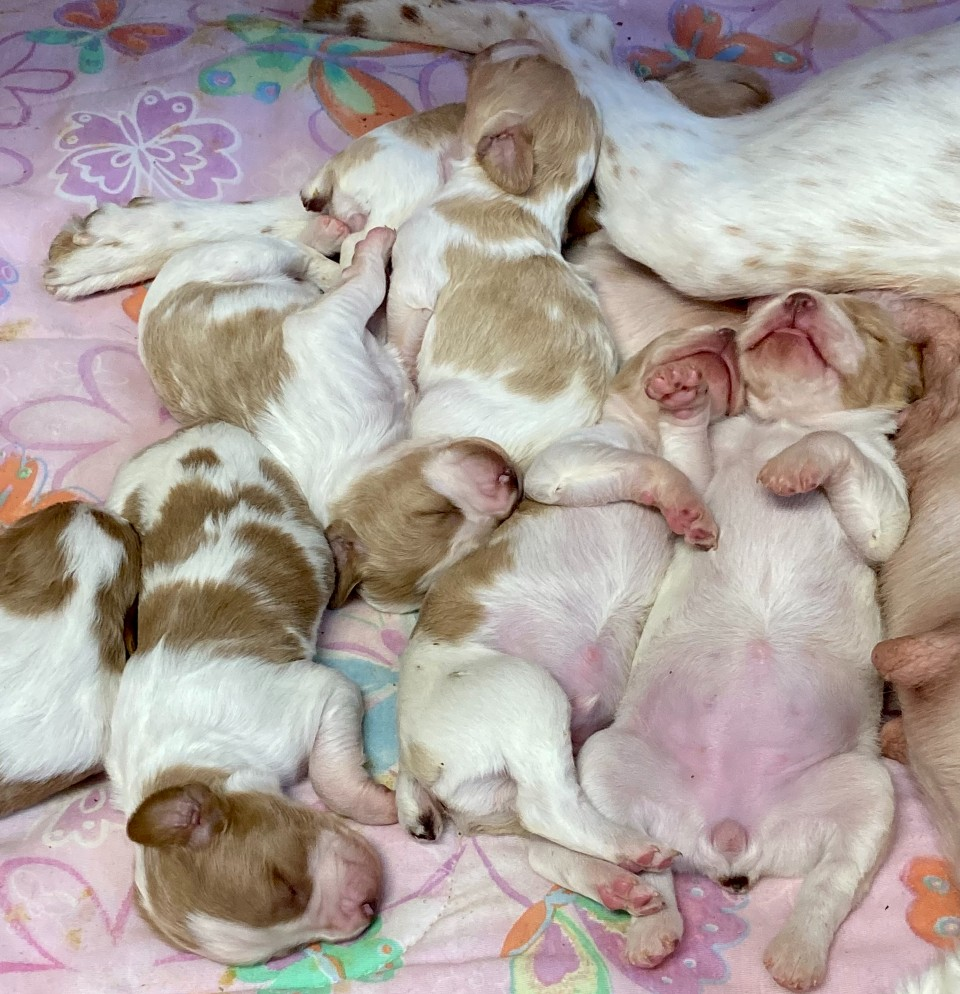
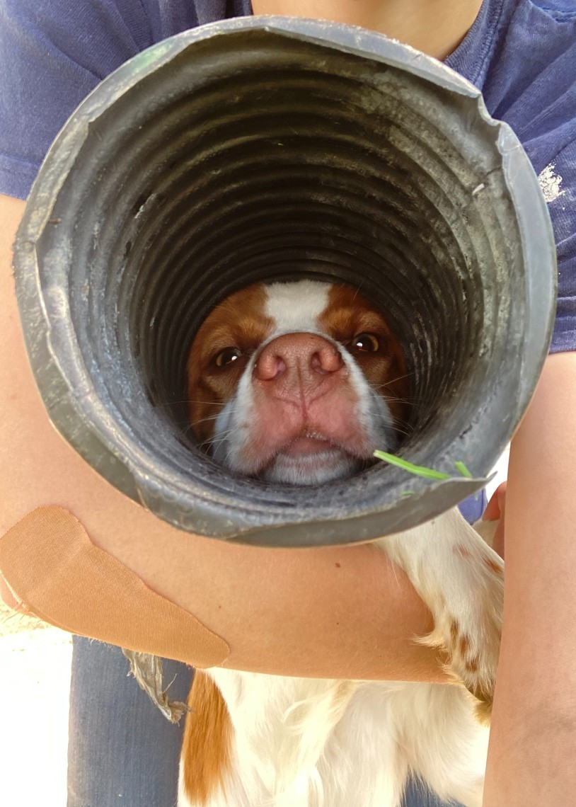

Born: October 26, 2020
Registered Name: Felter’s Rocking Round Robin
Sire: West Mountain Break the Bank Sparky
Dam: Felter’s Texas Champagne
Background
Robin is a Brittany. Brittanies are pointing dogs used for hunting fowl. Pointing dogs differ from flushing dogs as they won't flush the bird. Instead, they will alert their owner that they have found a bird by pointing at it with their nose. The owner will then flush the bird, and, hopefully, they will be able to shoot it, the dog will retrieve it, and it will be a successful hunt. My mother plans to use Robin in a hunting club called NSTRA.
The Beginning

I have raised Robin since birth as well as her mother, Bella, and her grandmother, Mo.
Robin was the third born of seven puppies. While we raised them, her siblings' names were Gretchen, Milo, Eyeballs, Rosie,
Thaddeus, and Seven. For a long time, most of them didn't have names. Only the two boys, Milo and Thaddeus, were named at birth.
I don't know where the name Gretchen came from, but the others all have stories. Milo and Thaddeus were named after the animated
movie 'Atlantis: The Lost Empire'. Eyeballs was the first to open her eyes, hence, Eyeballs. Rosie was the runt and I
wanted to give her a cute name, and Seven was the seventh puppy born. We also used to have a dog named Seven, so her name was a
nod to her predecessor.
The Sweetest Girl
Robin has many adventures. Like the time that she got her head stuck in a drain pipe, which we had to cut off of her
because she was so stuck.
Robin’s favorite things include pigeons, bones, treats, jumping on anything she can, and running around the yard testing
every hole in the fence. She gets into a lot of trouble. I don't know what goes on inside her head, but I imagine it’s
mostly bird and crack.
But, she will snuggle with me for hours, and she is pretty cute. All things considered, she is my sweetest girl, even if
she can be a handful.